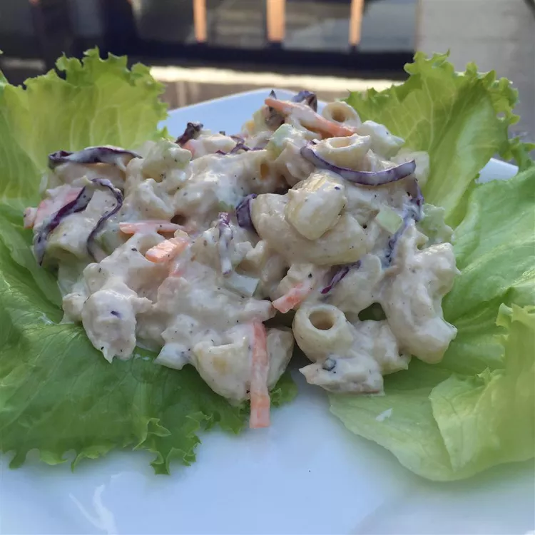

Tuna Macaroni Salad

Description
A fun chicken recipe the kids can help prepare. They love crushing the crackers. It does not matter if the measurements aren't perfect, just wing it!
Ingredients
- 3 cups uncooked macaroni
- 1/3 cup Italian-style salad dressing
- 1/2 cup sour cream
- 1 cup mayonnaise
- 1 onion, chopped
- 2 stalks celery, chopped
- 1/2 teaspoon garlic powder
- 1 teaspoon salt
- 1/2 teaspoon ground black pepper
- 1 (5 ounce) can tuna, drained
Steps
- Cook macaroni in a large pot of boiling salted water until done. Drain
- Marinate macaroni in Italian dressing for 2 to 3 hours or overnight.
- Mix sour cream, mayonnaise, onion, celery, garlic powder, tuna, and salt and pepper into macaroni. Chill before serving.